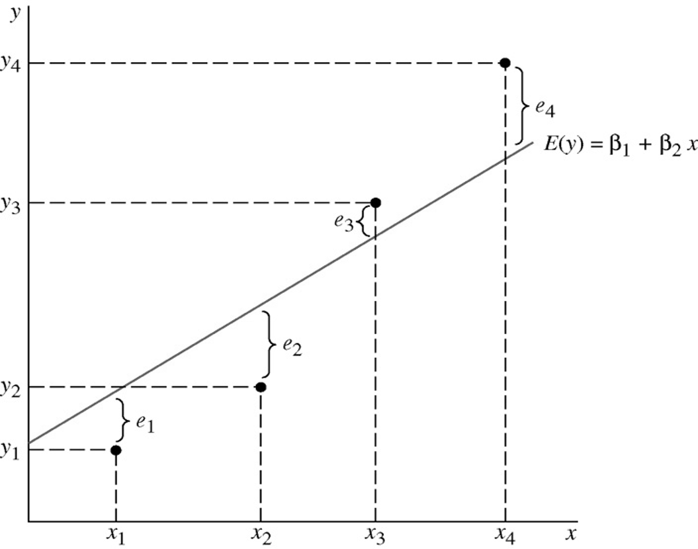
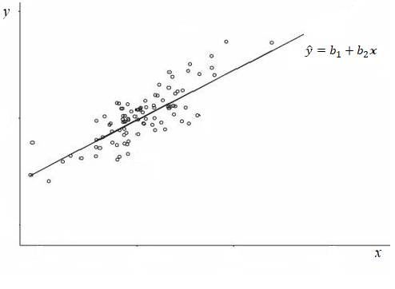
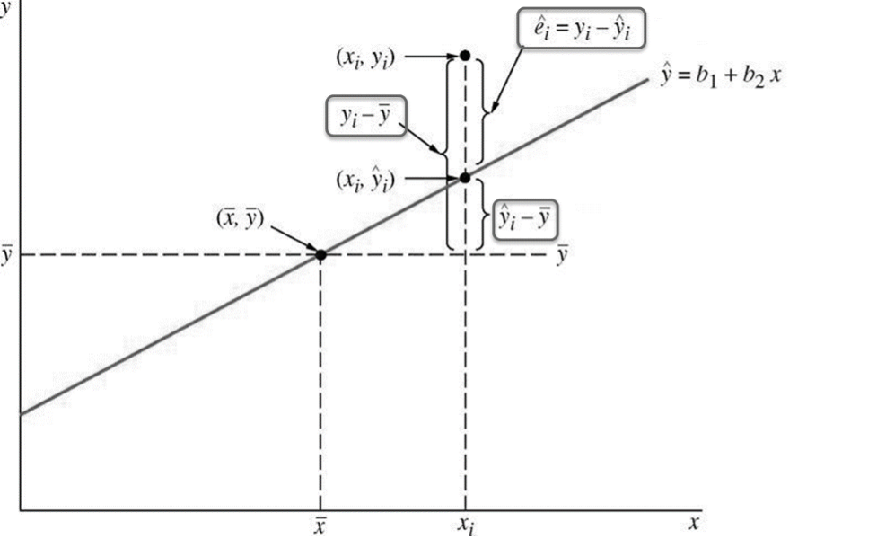
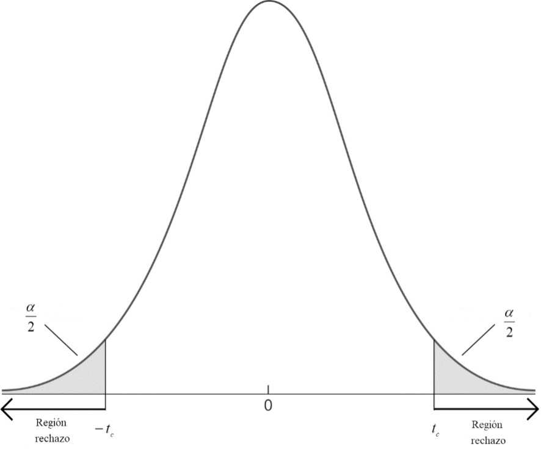
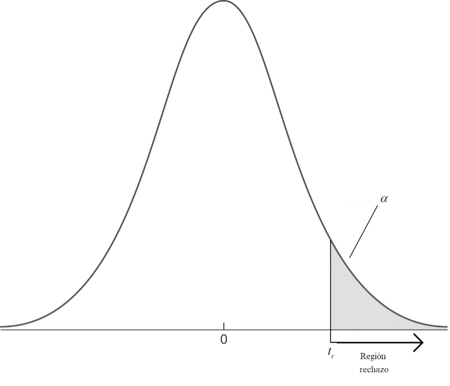
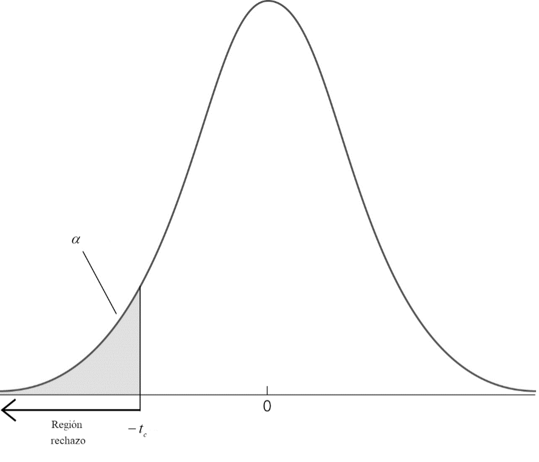
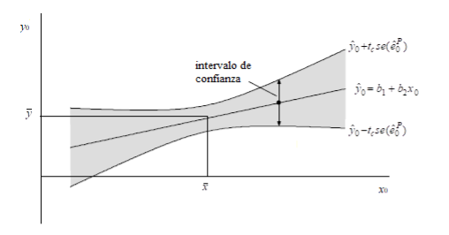
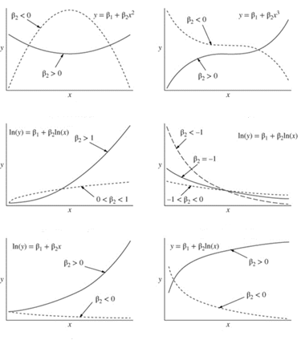

2 El modelo de regresión lineal y sus hipótesis básicas
2.1 Introducción
A través del contenido recogido en este tema pretendemos sentar las bases que permitirán llegar a realizar un análisis de regresión con variables económicas, siendo capaz de juzgar la validez del modelo y de interpretar sus resultados desde los puntos de vista estadístico y económico.
Así, analizaremos relaciones econométricas del tipo
\[y = \beta_{1} + \beta_{2}x_{2} + \ldots + \beta_{K}x_{K} + e\]
es decir, regresiones con una variable dependiente, \(y\), y varias variables explicativas, \(x_{j}\), las cuales ayudan a explicar parcialmente el comportamiento de la variable \(y\).
2.2 El modelo de regresión lineal
2.2.1 Especificación
Consideremos que, de acuerdo con la teoría económica, una variable \(y\), que describe el comportamiento de un agente económico o un determinado aspecto de un sistema económico bajo estudio, está relacionada con un conjunto de variables explicativas\(\ x_{2},x_{3},\ldots,x_{K}\), según la relación lineal \(\ y = \beta_{1} + \beta_{2}x_{2} + \ldots + \beta_{K}x_{K} + e\) . En esta ecuación supondremos que \(\beta_{1},\beta_{2},\ldots,\beta_{K}\) son parámetros fijos y que \(e\) es una variable aleatoria, es decir, sus valores se determinan por un mecanismo probabilista.
Por tanto, al expresar la variable y mediante la relación anterior, estamos suponiendo que tiene dos componentes: una parte explicada o sistemática, que vendría dada por \(\beta_{1} + \beta_{2}x_{2} + \ldots + \beta_{K}x_{K}\) y una parte no explicada, \(e\), conocida como perturbación aleatoria o error del modelo.
La perturbación aleatoria del modelo (\(e\)) recoge factores tales como:
El comportamiento aleatorio propio de los agentes económicos.
Los errores de medida en la variable y o en las variables > explicativas x’s.
El efecto conjunto de otras variables no incluidas en el modelo.
El objetivo básico de la econometría inicialmente se centrará en la estimación del conjunto de parámetros estructurales, \(\mathbf{\beta} = \left( \beta_{1},\beta_{2},\ldots,\beta_{K} \right)'\), siendo el principal interés el obtener dichas estimaciones y realizar inferencias sobre los parámetros poblacionales y, por tanto, sobre la estructura del sistema económico analizado.
La finalidad última consistirá en realizar predicciones sobre valores futuros de y, evaluar políticas concretas (cómo varía y al cambiar los valores de alguna de las x’s) o realizar análisis de control (qué valor debe tomar alguna o algunas de las variables explicativas para alcanzar un determinado valor de y).
Como es habitual en estadística, intentaremos construir un estimador, es decir, una función que a cada muestra le haga corresponder un valor de los parámetros, que posea buenas propiedades. Para ello consideraremos que disponemos de una muestra de n (o T) observaciones de las variables x’s e y.
Se llama modelo de regresión lineal (MRL) al modelo probabilístico
\[y = \beta_{1} + \beta_{2}x_{2} + \ldots + \beta_{K}x_{K} + e\]
donde, \(y\), la variable dependiente o explicada, es una variable observable aleatoria; \(x_{2},x_{3},\ldots,x_{K}\) las variables explicativas, son variables observables, aleatorias o que toman valores fijos en muestras repetidas; \(\mathbf{\beta} = \left( \beta_{1},\beta_{2},\ldots,\beta_{K} \right)'\), los parámetros estructurales del modelo, son un conjunto de constantes fijas y desconocidas; y \(e\), el término de error, es una variable aleatoria.
Para la estimación del modelo se dispone de una muestra de n observaciones \(\left( y_{i},x_{2i},\ldots,x_{Ki} \right)\) independientes e idénticamente distribuidas (IID) extraídas de la distribución conjunta asociada al MRL, de modo que para cada \(i = 1,2,\ldots,n\) se tiene que
\[y_{i} = \beta_{1} + \beta_{2}x_{2i} + \ldots + \beta_{K}x_{Ki} + e_{i}\]
Este conjunto de ecuaciones puede expresarse matricialmente por:
\[\begin{bmatrix} y_{1} \\ \vdots \\ y_{n} \\ \end{bmatrix} = \begin{bmatrix} 1 & x_{21} & \ldots & x_{K1} \\ \vdots & \vdots & \vdots & \vdots \\ 1 & x_{2n} & \ldots & x_{Kn} \\ \end{bmatrix}\begin{bmatrix} \beta_{1} \\ \vdots \\ \beta_{K} \\ \end{bmatrix} + \begin{bmatrix} e_{1} \\ \vdots \\ e_{n} \\ \end{bmatrix}\]
o también, de forma más compacta, como
\[\mathbf{y} = \mathbf{X\beta} + \mathbf{e}\]
donde: \(\mathbf{y} = \left( y_{1},y_{2},\ldots,y_{n} \right)'\) es el \(n \times 1\) vector columna de las observaciones de la variable endógena; \(\mathbf{X} = \left(\mathbf{x}_{1},\mathbf{x}_{2},\ldots,\mathbf{x}_{K} \right)\) es la matriz, de orden \(n \times K\) que en cada columna consigna las observaciones de las variables exógenas \(\mathbf{x}_{j}\) (\(j = 1,2,\ldots,K\)), considerando \(\mathbf{x}_{j} = \left( x_{j1},x_{j2},\ldots,x_{jn} \right)'\), siendo \(x_{1i} = 1\ \forall\ i = 1,2,\ldots,n\); \(\mathbf{\beta} = \left( \beta_{1},\beta_{2},\ldots,\beta_{K} \right)'\) es el \(K \times 1\) vector que contiene los coeficientes desconocidos (parámetros estructurales) del modelo; y \(\mathbf{e} = \left( e_{1},e_{2},\ldots,e_{n} \right)'\) es el \(n \times 1\) vector de los errores o perturbaciones aleatorias del modelo.
2.2.2 Hipótesis básicas del MRL (condiciones de regularidad)
Para que el estimador de mínimos cuadrados ordinarios (MCO), que se expondrá más adelante, tenga las propiedades estadísticas adecuadas, deben cumplirse las siguientes hipótesis:
H1: Respecto a la especificación del modelo:
H1.1: Aparecen todas las variables relevantes: el modelo no excluye ninguna variable explicativa esencial (completitud), ni incluye variables irrelevantes (exactitud).
H1.2: El término de error, \(e\), actúa de forma aditiva (aditividad).
H1.3: La forma funcional es correcta y, además, es lineal en los parámetros (linealidad).
H1.4: Los parámetros estructurales \(\beta_{j}\) son constantes (estabilidad estructural).
H2: Respecto a los regresores del modelo:
H2.1: O bien las variables explicativas son no estocásticas y toman valores fijos en muestras repetidas (y además los valores no son todos iguales entre si, es decir, la varianza muestral debe ser distinta de cero) o, en el caso más común en economía, donde los datos son de tipo no experimental, si las variables explicativas son aleatorias, deben estar incorrelacionadas con los factores contenidos en el término de error, \(E(\mathbf{e}|\mathbf{X}) = \mathbf{0}\) (exogeneidad estricta).
H2.2: Debe cumplirse que \(n > \ K\) y \(\ rango\left( \mathbf{X} \right) = K\), es decir, (1) debe haber un número mayor de observaciones que de parámetros a estimar, y (2) puesto que el rango de la matriz X debe ser completo (\(K\)), ninguna variable explicativa puede ser combinación lineal exacta de las restantes, es decir, deben ser linealmente independientes (ausencia de colinealidad perfecta).
H3: Respecto a los errores del modelo:
H3.1: \(Var\left( e_{i}|\mathbf{X} \right) = \sigma^{2}\ \ \forall\ i = 1,2,\ldots,n\) (homoscedasticidad). El parámetro de escala \(\sigma\) se conoce como desviación estándar de la regresión (o del modelo), midiendo “el tamaño medio de los errores del modelo”.
H3.2: \(Cov\left( e_{i},e_{j}|\mathbf{X} \right) = 0\ \ \ \forall\ i \neq j\) (ausencia de correlación).
H3.3: Los errores siguen una distribución normal, \(e_{i}|\mathbf{X}\sim N\ \ \forall\ i = 1,2,\ldots,n\) (normalidad).
2.2.3 Algunas propiedades, interpretaciones o representaciones del MRL
La hipótesis de exogeneidad estricta implica que \(E\left( e_{i} \right) = 0\ \ \forall\ i\), \(E(\mathbf{Xe}) = \mathbf{0}\) y \(Cov(\mathbf{X},\mathbf{e}) = \mathbf{0}\). En este sentido, en lugar de la propiedad estricta, suele utilizarse la hipótesis derivada \(Cov\left( \mathbf{x}_{j},\mathbf{e} \right) = 0\) para cada variable explicativa \(x_{j}\), \(j = 1,2,\ldots,K\) (exogeneidad débil), lo que significa que no debe existir ninguna correlación lineal entre las variables explicativas y el término de error. Si no se verifica esta hipótesis, es decir, cuando \(Cov\left( \mathbf{x}_{k},\mathbf{e} \right) \neq 0\) para alguna variable explicativa \(\mathbf{x}_{k}\), se dice que ese regresor es endógeno, y en este caso el estimador de mínimos cuadrados ordinarios que propondremos más adelante deja de tener buenas propiedades estadísticas (en concreto, será sesgado e inconsistente).
La ausencia de multicolinealidad estricta implica que \(\det(\mathbf{X}^{\mathbf{'}}\mathbf{X}) \neq \mathbf{0}\), lo que garantiza la existencia de la inversa de la matriz \(\left( \mathbf{X}\mathbf{'}\mathbf{X} \right)\) que aparece en el cálculo de las estimacones mínimo-cuadráticas.
Las sub-hipótesis H3.2 y H3.3 pueden agruparse en una única expresión matricial: \[\mathbf{\Omega} = Cov\left( \mathbf{e} \right) = \begin{bmatrix} Var\left( e_{1} \right) & \cdots & Cov\ \left( e_{1},e_{n} \right) \\ \vdots & \ddots & \vdots \\Cov\ \left( e_{1},e_{n} \right) & \cdots & Var\left( e_{n} \right) \\ \end{bmatrix} = \begin{bmatrix} \sigma^{2} & \cdots & 0 \\ \vdots & \ddots & \vdots \\ 0 & \cdots & \sigma^{2} \\ \end{bmatrix} = \sigma^{2}\mathbf{I}\]
Las perturbaciones que cumplen estas dos propiedades (homoscedasticidad y ausencia de correlación) son conocidas como perturbaciones esféricas.
- Puesto que se cumple que \[\mathbf{e}\mathbf{|}\mathbf{X}\sim N_{n}(\mathbf{0}_{n},\sigma^{2}\mathbf{I}_{n}\mathbf{)}\] en términos de la variable dependiente la expresión anterior es equivalente a decir que el vector de respuestas \(\mathbf{y}\) sigue tiene una distribución normal multivariante
\[\mathbf{y}\mathbf{|}\mathbf{X}\sim N_{n}(\mathbf{X\beta},\sigma^{2}\mathbf{I}_{n}\mathbf{)}\]
Se tiene entonces que, al igual que para el vector de errores e, la matriz de covarianzas de \(\mathbf{y}\) viene dada por \(Cov\left( \mathbf{y}\mathbf{|}\mathbf{X} \right) = \sigma^{2}\mathbf{I}_{n}\).
De igual manera, la función de regresión poblacional es una función lineal dada por \[E(y_{i}\mathbf{|}\mathbf{X}\mathbf{) =}\mathbf{X}_{i}\mathbf{\beta}\] siendo \(\mathbf{X}_{i} = \left( 1,x_{2i},\ldots,x_{Ki} \right)\) la i-ésima fila de la matriz \(\mathbf{X}\), que también puede escribirse en forma no matricial como
\[E\left( y_{i}|x_{2i},\ldots,x_{Ki} \right) = \beta_{1} + \beta_{2}x_{2i} + \ldots + \beta_{K}x_{Ki}\]
verificándose, por tanto, que
\[\beta_{j} = \frac{\partial E\left( y|\mathbf{X} \right)}{\partial x_{j}}\]
Entonces, cada parámetro \(\beta_{j}\) mide aproximadamente el efecto parcial (tasa de cambio marginal) sobre la media (condicional) de la variable dependiente \(y\) de un cambio unitario en la variable explicativa \(x_{j}\), bajo la hipótesis de que el resto de las variables explicativas permanece constante (supuesto ‘ceteris paribus’ que, en la práctica, dado el carácter en general ‘observacional’ de los datos económicos, debe ser asumido con cautela).
Una vez estimado el modelo, al substituir los parámetros desconocidos por sus estimaciones, se tiene entonces que:
\[{\widehat{\beta}}_{j} \cong \mathrm{\Delta}\widehat{E}\left( y|x_{2},\ldots,x_{K} \right)\ \ cuando\ \ \mathrm{\Delta}x_{j} = 1\ \ y\ \ \mathrm{\Delta}x_{i} = 0\ \ para\ \ i \neq j\]
Se puede visualizar el efecto de una variable \(x_{j}\) sobre la media condicional estimada fijando el valor del resto de regresores \(x_{i}\ (i \neq j)\) en los valores medios muestrales \(x_{i} = {\overline{x}}_{i}\), y representando la variable \(E(y|{\overline{x}}_{2},\ldots,x_{j},\ldots,{\overline{x}}_{K})\) como función de \(x_{j}\). Estas figuras se conocen como gráficas de efectos (’effect plots’), y suelen representarse junto con el intervalo de confianza para los valores estimados. Contienen, por tanto, una información similar a las parejas parámetro-desviación típica estimados, \(\left( {\widehat{\beta}}_{j},se\left( {\widehat{\beta}}_{j} \right) \right)\), que se verán más adelante, y que miden el efecto parcial, y su variabilidad, de cada variable explicativa.
Por otra parte, en la discusión anterior se está asumiendo que cuando un regresor cambia el resto de las variables explicativas permanece constante, lo que implica que no existe correlación entre ellas. Si quiere medirse el efecto de una variable explicativa cuando ya existen otros regresores (correlacionados o no con la primera), suelen utilizarse las llamadas gráficas de variables añadidas (’added-variable plots’), que miden el efecto de una variable sobre la media condicional descontando el efecto del resto de regresores. Se construyen realizando regresiones auxiliares de la variable dependiente y la variable explicativa de interés sobre el resto de los regresores, y representando posteriormente la parte no explicada de ambas regresiones (los residuos) una frente a la otra. La pendiente de dicha regresión coincide con el parámetro \(\beta\) correspondiente a la regresión que incluye todas las variables del modelo, lo que sugiere que las estimaciones de un modelo de regresión lineal múltiple llevan descontado el efecto del resto de regresores en la función media.
Como resumen de este compendio de anotaciones sobre el MRL, el modelo de regresión lineal \(\mathbf{y} = \mathbf{X\beta} + \mathbf{e}\) debe cumplir las siguientes hipótesis:
(H1-Linealidad): \(E\left( y_{i} \middle| \mathbf{X} \right) = \mathbf{X}_{i}\mathbf{\beta}\)
(H2-Homoscedasticidad): \(Var\left( y_{i} \middle| \mathbf{X} \right) = \sigma^{2}\ ,\ \ i = 1,2,\ldots,n\)
(H3-Incorrelación): \(Cov\left( y_{i},y_{j} \middle| \mathbf{X} \right) = 0 , i \neq j\)
(H4-Normalidad): \(y_{i}\mathbf{|}\mathbf{X}\ \sim N\left( \mathbf{X}_{i}\mathbf{\beta},\sigma^{2} \right)\ \ ,\ \ i = 1,2,\ldots,n\)
(H5-Exogeneidad): \(Cov\left( \mathbf{x}_{k},\mathbf{e} \right) = 0 , k = 1,2,\ldots,K\)
2.2.4 Estimación de los parámetros estructurales: el método de mínimos cuadrados ordinarios (MCO)
Sea \(E(y_{i}|x_{2i},\ldots,x_{Ki}) = \beta_{1} + \beta_{2}x_{2i} + \ldots + \beta_{K}x_{Ki}\) la función de regresión poblacional que se deriva de un cierto modelo económico, es decir, \(E(y_{i})\) representa el valor esperado (condicional) de la variable y dado un cierto valor de las variables x’s. Dada la naturaleza aleatoria de la variable dependiente, los valores que se observan de y diferirán generalmente de \(E(y_{i})\) por múltiples causas, por lo que se tendrá la relación \(y_{i} = E\left( y_{i} \right) + e_{i}\) donde el término de error \(e_{i}\) representa el efecto combinado de esos factores que ‘perturban’ la relación teórica.
En el caso del modelo con una sola variable explicativa, la representación gráfica de la relación \(y_{i} = E\left( y_{i} \right) + e_{i}\) sería la siguiente:

Supongamos que se dispone de una muestra de observaciones independientes para un conjunto de individuos (\(i = 1,\ldots,n\)) o de períodos de tiempo (\(t = 1,\ldots,T\)). El método de mínimos cuadrados ordinarios (MCO) toma como estimación de la regresión poblacional la función más próxima al conjunto de puntos muestrales, para lo cual encuentra estimaciones \(b_{i}\) para cada parámetro \(\beta_{i}\) de la regresión poblacional.
Formalmente, si se define la función de regresión muestral como
\[\widehat{y} = b_{1} + b_{2}x_{2} + \ldots + b_{K}x_{K}\]
entonces para cada observación de las variables exógenas \(\mathbf{X}_{i} = \left( 1,x_{2i},\ldots,x_{Ki} \right)\) el correspondiente punto sobre dicha función viene dado por \({\widehat{y}}_{i} = b_{1} + b_{2}x_{2i} + \ldots + b_{K}x_{Ki} = \mathbf{X}_{i}\mathbf{b}\). Si se definen los errores estimados (residuos) del modelo, para cada observación, como las distancias verticales
\[{\widehat{e}}_{i} = y_{i} - {\widehat{y}}_{i}\]
el método de mínimos cuadrados intenta minimizar la suma de los cuadrados de los residuos:
\[S\left( b_{1},b_{2},\ldots,b_{K} \right) = \sum_{i = 1}^{n}{{\widehat{e}}_{i}^{2} = \sum_{i = 1}^{n}\left( y_{i} - {\widehat{y}}_{i} \right)^{2}}\]
Gráficamente, para el modelo de dos variables, la recta MCO estimada sería como la mostrada a continuación:

Técnicamente, la función a minimizar se puede expresar matricialmente de la forma siguiente:
\[S\left( \mathbf{b} \right) = \sum_{i = 1}^{n}{{\widehat{e}}_{i}^{2} = {\widehat{\mathbf{e}}}^{\mathbf{'}}\mathbf{e}\mathbf{= (}\mathbf{y}\mathbf{-}\mathbf{Xb}\mathbf{)'(}\mathbf{y}\mathbf{-}\mathbf{Xb}\mathbf{)}}\]
Para obtener los valores de las estimaciones que minimizan dicha función derivamos respecto de \(\mathbf{b}\), e igualamos a 0 (condición de primer orden), obteniéndose el siguiente conjunto de ecuaciones:
\[\frac{\partial S\left( \mathbf{b} \right)}{\partial\mathbf{b}} = \mathbf{0}\ \ \Longleftrightarrow \ \ \mathbf{X}^{\mathbf{'}}\mathbf{Xb}\mathbf{=}\mathbf{X}^{\mathbf{'}}\mathbf{y}\]
que es conocido como sistema de ecuaciones normales.
Como \(\left( \mathbf{X}\mathbf{'}\mathbf{X} \right)\) es una matriz cuadrada de orden K, y rango también igual a K, tiene matriz inversa, dada por \(\left( \mathbf{X}\mathbf{'}\mathbf{X} \right)^{- 1}\), lo cual nos permite pre-multiplicar las ecuaciones normales por dicha matriz inversa, obteniéndose las estimaciones MCO del vector β, dadas por
\[\mathbf{b}\mathbf{=}\left( \mathbf{X}\mathbf{'}\mathbf{X} \right)^{\mathbf{-}\mathbf{1}}\mathbf{X}^{\mathbf{'}}\mathbf{y}\]
2.2.5 Propiedades estadísticas y algebraicas del estimador MCO, \(\widehat{\mathbf{\beta}}\)
Cuando la expresión \(\mathbf{b} = \left( \mathbf{X}\mathbf{'}\mathbf{X} \right)^{- 1}\mathbf{X}\mathbf{'}\mathbf{y}\) se considera función de los valores de la variable y para distintas muestras, hablaremos del estimador MCO,
\[\widehat{\mathbf{\beta}}\mathbf{=}\left( \mathbf{X}\mathbf{'}\mathbf{X} \right)^{\mathbf{-}\mathbf{1}}\mathbf{X}^{\mathbf{'}}\mathbf{y}\]
del cual cabe preguntarse, al tratarse de una variable aleatoria, qué propiedades caracterizan su distribución. Pues bien, si se verifican todas las hipótesis hechas para el MRL, las propiedades del estimador MCO son las siguientes:
1. El estimador \(\widehat{\mathbf{\beta}} = \left( \mathbf{X}\mathbf{'}\mathbf{X} \right)^{- 1}\mathbf{X}\mathbf{'}\mathbf{y}\) es una función lineal de y.
2. \(E\left( \widehat{\mathbf{\beta}}\mathbf{|}\mathbf{X} \right) = \mathbf{\beta}\), es decir, \(\widehat{\mathbf{\beta}}\) es un estimador insesgado.
3. La matriz de varianzas-covarianzas viene dada por \(Cov\left( \widehat{\mathbf{\beta}}\mathbf{|}\mathbf{X} \right) = \sigma^{2}\left( \mathbf{X}\mathbf{'}\mathbf{X} \right)^{\mathbf{-}\mathbf{1}}\).
4. Teorema de Gauss-Markov: el estimador \(\widehat{\mathbf{\beta}}\) es el mejor estimador lineal insesgado (MELI) de los parámetros estructurales del modelo de regresión, proporcionando varianzas mínimas dentro de esa clase de estimadores.
5. Si se cumple la hipótesis de normalidad, se puede demostrar que el estimador MCO es también eficiente, es decir, el mejor de todos los estimadores insesgados, sean lineales o no. Esta propiedad se deriva del hecho de que, asumiendo la normalidad de los errores, el estimador MCO del vector de parámetros \(\mathbf{\beta}\) coincide con el estimador de máxima verosimilitud (MV). Puede demostrarse fácilmente este resultado teniendo en cuenta que el logaritmo de la función de verosimilitud del modelo de regresión lineal múltiple normal viene dado por la expresión \(\log{\left\lbrack L(\mathbf{\beta},\sigma^{2}|\mathbf{y} \right\rbrack = - {\frac{n}{2}\log(2\pi)} - {\frac{n}{2}\log{\left( \sigma^{2} \right) - {\frac{1}{2\sigma^{2}}\sum_{i = 1}^{n}\left( y_{i} - \mathbf{X}_{i}\mathbf{\beta} \right)^{2}}}}}\) y que el vector \(\mathbf{\beta}\) sólo aparece en el último término, lo que implica que maximizar \({log}L\) respecto a \(\mathbf{\beta}\) equivale a minimizar \(\sum_{i = 1}^{n}\left( y_{i} - \mathbf{X}_{i}\mathbf{\beta} \right)^{2}\) respecto a dicho vector. Por otra parte, diferenciando \(\log L\) respecto a \(\sigma^{2}\) e igualando a cero el resultado, se obtiene la estimación MV de la varianza residual, \({\widetilde{\sigma}}^{2} = \frac{\sum_{i = 1}^{n}\left( y_{i} - \mathbf{X}_{i}\widehat{\mathbf{\beta}} \right)^{2}}{n}\), similar a la estimación MCO de dicho parámetro que se verá más adelante, salvo por el hecho de que aquí en el cociente aparece n en lugar de n-K.
6. Bajo la hipótesis de normalidad, y teniendo en cuenta 2 y 3, se tiene que \(\widehat{\mathbf{\beta}}\sim N\left( \mathbf{\beta},\sigma^{2}\left( \mathbf{X}\mathbf{'}\mathbf{X} \right)^{\mathbf{-}\mathbf{1}} \right)\), es decir, el estimador \(\widehat{\mathbf{\beta}}\) sigue una distribución normal multivariante.
7. El estimador MCO, \(\widehat{\mathbf{\beta}}\), es consistente, \(plim\left( \widehat{\mathbf{\beta}} \right) = \mathbf{\beta}\), lo que significa que conforme aumenta el tamaño de la muestra crece la probabilidad de que las estimaciones se encuentren cerca de los valores poblacionales verdaderos que se intentan estimar: \[\ \lim_{n \rightarrow \infty}{P\left( \left| {\widehat{\beta}}_{j} - \beta_{j} \right| > \varepsilon \right)} = 0\ \ \ \ \ \forall\varepsilon > 0\] Una condición necesaria para que se cumpla la propiedad de consistencia es que se verifique que \(\lim_{n \rightarrow \infty}{E\left( {\widehat{\beta}}_{j} \right) = \beta_{j}}\) y \(\lim_{n \rightarrow \infty}{Var\left( {\widehat{\beta}}_{j} \right) = 0}\)].
2.2.6 Propiedades algebraicas de los residuos y de la regresión MCO
En una aplicación concreta, una vez que se han calculado las estimaciones MCO, se verifica que:
1. Los residuos del modelo, \({\widehat{e}}_{i} = y_{i} - {\widehat{y}}_{i}\), cumplen \(\sum_{i = 1}^{n}{x_{ji}\widehat{e}}_{i} = 0,\ \ j = 2,\ldots,\ K\) y, por tanto, el vector de residuos es ortogonal a la matriz de variables explicativas: \(\mathbf{X}^{'}\widehat{\mathbf{e}} = 0\)
2. La suma de los residuos es cero, \(\sum_{i = 1}^{n}{\widehat{e}}_{i} = 0\) y, por tanto, la media muestral de los mismos es nula, \(\overline{\widehat{\mathbf{e}}} = 0\).
3. Puesto que la media de los errores estimados es cero, debe cumplirse entonces que \(\overline{y} = b_{1} + b_{2}{\overline{x}}_{2} + \ldots + b_{K}{\overline{x}}_{K}\) y, por tanto, la función de regresión muestral siempre pasa por la media muestral de los datos.
2.2.7 Estimación de la varianza de los errores, \(\mathbf{\sigma}^{\mathbf{2}}\)
Dado que \(Cov\left( \widehat{\mathbf{\beta}}|\mathbf{X} \right) = \sigma^{2}{(\mathbf{X}^{'}\mathbf{X})}^{- 1}\), para conocer la precisión con la que se estiman los parámetros se necesita estimar la varianza de las perturbaciones aleatorias, \(\sigma^{2}\). Teniendo en cuenta que \(\sigma^{2} = Var\left( e_{i} \right) = E\left( e_{i}^{2} \right)\), como estimación de la varianza poblacional \(\mathbf{\sigma}^{\mathbf{2}}\) se toma la varianza residual muestral \(\mathbf{s}^{\mathbf{2}}\), dada por la expresión
\[s^{2} = \frac{\sum_{i = 1}^{n}{\widehat{e}}_{\mathbf{i}}^{\mathbf{2}}}{n - K}\]
siendo su raíz cuadrada, \(s\), el error estándar estimado, también llamado desviación típica de la regresión.
Cuando la expresión de \(s^{\mathbf{2}}\) se considera función de los valores de la variable y para distintas muestras, hablaremos del *estimador de la varianza residual,
\[{\widehat{\sigma}}^{2} = \frac{\mathbf{y}^{'}\left( \mathbf{I} - {\mathbf{X}\left( \mathbf{X}\mathbf{'}\mathbf{X} \right)}^{\mathbf{-}\mathbf{1}}\mathbf{X}^{\mathbf{'}} \right)\mathbf{y}}{n - K} = \frac{{\widehat{\mathbf{e}}}^{\mathbf{'}}\widehat{\mathbf{e}}}{n - K}\]
Al igual que en el caso del estimador MCO del vector de parámetros estructurales β, se puede demostrar que la varianza residual es un estimador insesgado de σ2, cumpliéndose entonces que \(\ E({\widehat{\sigma}}^{2}) = \sigma^{2}\).
En el caso del estimador MV de la varianza residual, se puede demostrar que \(E\left( {\widetilde{\sigma}}^{2} \right) = \frac{n - K}{n}\sigma^{2}\). Por tanto, aunque el estimador es sesgado, dicho sesgo desaparece asintóticamente al cumplirse que \(\lim_{n \rightarrow \infty}{\left( \frac{n - K}{n} \right) = 1}\).
2.3 Grado de ajuste de una regresión
Se entiende por grado (o bondad) de(l) ajuste de una regresión como “el nivel de proximidad de la función de regresión muestral, \({\widehat{y}}_{i} = b_{1} + b_{2}x_{2i} + \ldots + b_{K}x_{Ki}\), al conjunto de datos que sirve de soporte para la estimación”.
Como se ha mencionado anteriormente, la regresión estimada por MCO es la que proporciona la menor suma de los cuadrados de los residuos, \(SRC = \sum_{i = 1}^{n}{\widehat{e}}_{i}^{2} = \sum_{i = 1}^{n}\left( y_{i} - {\widehat{y}}_{i} \right)^{2}\), que llamaremos suma residual de cuadrados. Esta medida podría ser una primera aproximación válida del ajuste de una regresión, pero se ve afectada por las unidades de medida de cada una de las variables, de modo que es posible variar su magnitud solo con el cambio de escala de alguna de los regresores. Este hecho hace imprescindible la introducción de otras medidas de ajuste que sean homogéneas y que, en caso necesario, permitan comparar la bondad del ajuste entre modelos diferentes.
2.3.1 Coeficiente de determinación
Tal y como se muestra en la gráfica posterior, en el modelo de regresión lineal general, una vez estimada la función de regresión muestral, se cumple la igualdad:
\(y_{i} - \overline{y} = \left( {\widehat{y}}_{i} - \overline{y} \right) + \left( y_{i} - {\widehat{y}}_{i} \right) = \left( {\widehat{y}}_{i} - \overline{y} \right) + {\widehat{e}}_{i}\).

Por tanto, puede descomponerse la variabilidad total de los valores de la variable endógena alrededor de su media,
\[STC = \Sigma(y_{i} - \overline{y})^{2}\]
en dos partes, la suma de cuadrados explicada por la regresión (SEC) y la suma residual de cuadrados (SRC)
\[STC = SEC + SRC\]
es decir,
\[\Sigma(y_{i} - \overline{y})^{2} = \Sigma({\widehat{y}}_{i} - \overline{y})^{2} + \Sigma{ê_{i}}^{2}\]
A partir de esta descomposición de la variación total de la variable y, se define el coeficiente de determinación como la proporción de la variación total de y explicada por la regresión, es decir,
\[R^{2} = \frac{SEC}{STC} = 1 - \frac{SRC}{STC}\]
Este coeficiente cumple las siguientes propiedades:
\(0 \leq R^{2} \leq 1\).
\(R^{2} = \left( r_{y,\widehat{y}} \right)^{2}\), es decir, el > coeficiente de determinación coincide con el cuadrado del > coeficiente de correlación lineal entre los valores observados de > \(y\) y los valores estimados \(\widehat{y}\).
\(R^{2} = 1\) cuando \(STC = SEC\) o, equivalentemente, \(SRC = 0\); es > decir, cuando todos los puntos muestrales están sobre la función > de regresión (\(\sum_{i = 1}^{n}{\widehat{e}}_{i}^{2} = 0\)) y, por > tanto, el ajuste del modelo de regresión es perfecto.
\(R^{2} = 0\) cuando \(SEC = 0\), es decir, \(STC = SRC\) y, por tanto, > todos los \(b_{i}\), para \(i > 1\), son nulos y el modelo se reduce a > \(y_{i} = \overline{y} + e_{i}\). Consecuentemente, las variables > exógenas no tendrán ninguna influencia en la variación de los > valores de variable y, es decir, no tendrán ningún valor > explicativo y el ajuste del modelo de regresión es nulo.
2.3.2 Coeficiente de determinación ajustado
Se puede demostrar que, si se incrementa el número de variables explicativas del modelo, aunque no tengan relación alguna con la variable dependiente, nunca disminuye el \(R^{2}\) de la regresión. Esto hace que comparar dos regresiones en base al \(R^{2}\) obtenido, con la misma variable dependiente y diferente número de regresores, no sea fiable. De hecho, la inclusión discrecional en el modelo de variables explicativas ajenas al sistema económico estudiado puede elevar artificialmente su valor.
Por tal razón, y con el fin de descontar el efecto que el número de variables explicativas (y la consiguiente pérdida de grados de libertad) introduce en el \(R^{2}\), se define el coeficiente de determinación ajustado (ajusta el \(R^{2}\) original por los grados de libertad de cada suma de cuadrados):
\[{\overline{R}}^{2} = 1 - \frac{\frac{SRC}{(n - K)}}{\frac{STC}{(n - 1)}}\]
De su definición, es inmediata la relación
\[{\overline{R}}^{2} = 1 - (1 - R^{2})\frac{n - 1}{n - K}\]
y, por tanto, el aumento del valor del \({\overline{R}}^{2}\) al incluir una nueva variable explicativa dependerá de su contribución ‘real’ al modelo y, a diferencia de lo que ocurre con el \(R^{2}\) estándar, puede disminuir cuando se incorporan nuevas variables si no compensa la pérdida de grados de libertad.
Puede observarse, de la propia definición del estadístico, que se cumple la igualdad
\[{\overline{R}}^{2} = 1 - \frac{{\widehat{\sigma}}^{2}}{\frac{STC}{(n - 1)}}\]
lo que implica que cuanto mayor sea la dispersión de los residuos, es decir, cuando más elevada sea la variación de las desviaciones de los valores observados respecto a la función de regresión muestral estimada, menor será el ajuste proporcionado por el modelo. Esta expresión nos muestra también que conseguir un buen ajuste del modelo, maximizando el estadístico \({\overline{R}}^{2}\), es equivalente a minimizar la varianza residual de la regresión, \({\widehat{\sigma}}^{2}\).
2.4 Inferencia estadística (I): Intervalos de confianza y contrastes de hipótesis para los parámetros del modelo
2.4.1 Distribución de los estimadores de los parámetros estructurales
De las hipótesis hechas para el modelo de regresión lineal se tiene que \(\widehat{\mathbf{\beta}}\sim N(\mathbf{\beta},\sigma^{2}\left( \mathbf{X}^{\mathbf{'}}\mathbf{X} \right)^{- 1})\). Por tanto, las distribuciones marginales vienen dadas por
\[{\widehat{\beta}}_{k}\sim N(\beta_{k},\sigma^{2}a_{kk})\]
donde \(a_{kk}\) es el elemento k-ésimo de la diagonal de la matriz \({(\mathbf{X}^{'}\mathbf{X})}^{- 1}\) y, en consecuencia, cada elemento \(\sigma^{2}a_{kk}\) representa la varianza del estimador \({\widehat{\beta}}_{k}\), y su raíz cuadrada la desviación estándar del mismo.
Si se estima la desviación típica de cada \({\widehat{\beta}}_{k}\) por \(se({\widehat{\beta}}_{k}) = \widehat{\sigma}\sqrt{a_{kk}}\), se puede demostrar entonces que el estadístico \(\frac{({\widehat{\beta}}_{k} - \beta_{k})}{se({\widehat{\beta}}_{k})}\) sigue una distribución t de Student con n-K grados de libertad, es decir,
\[\frac{{\widehat{\beta}}_{k} - \beta_{k}}{se({\widehat{\beta}}_{k})}\sim t_{n - K}\]
Este resultado permite la obtención de expresiones sencillas de los intervalos de confianza para cada uno de los parámetros estructurales, βk, y la realización de contrastes estadísticos acerca de sus posibles valores.
2.4.2 Intervalos de confianza para los parámetros estructurales
Puesto que \(\frac{{\widehat{\beta}}_{k} - \beta_{k}}{se\left( {\widehat{\beta}}_{k} \right)}\sim t_{n - K}\) se sigue que \(P\left( - t_{n - K,\frac{\alpha}{2}} < \frac{{\widehat{\beta}}_{k} - \beta_{k}}{se({\widehat{\beta}}_{k})} < t_{n - K,\frac{\alpha}{2}} \right) = 1 - \alpha\) y, realizando algunas operaciones aritméticas elementales, se llega a la siguiente expresión:
\[P\left( {\widehat{\beta}}_{k} - t_{n - K,\frac{\alpha}{2}}se({\widehat{\beta}}_{k}) < \beta_{k} < {\widehat{\beta}}_{k} + t_{n - K,\frac{\alpha}{2}}se({\widehat{\beta}}_{k}) \right) = 1 - \alpha\]
Por tanto, el intervalo de confianza al 100(1-α)% para el parámetro βk viene dado por:
\[I_{100(1 - \alpha)\%}(\beta_{k}) = \left( {\widehat{\beta}}_{k} - t_{n - K,\frac{\alpha}{2}}se({\widehat{\beta}}_{k}),{\widehat{\beta}}_{k} + t_{n - K,\frac{\alpha}{2}}se({\widehat{\beta}}_{k}) \right)\]
Debemos tener presente que, dada una muestra concreta, la probabilidad de que el intervalo obtenido contenga al verdadero valor de βk es 1, si contiene al verdadero valor, ó 0 si no lo contiene. Sin embargo, nuestra confianza de que el intervalo contenga al verdadero valor de βk es del \(100(1 - \alpha)\) por ciento porque, en un contexto de muestras repetidas, este sería el porcentaje de intervalos de este tipo que contendrían al verdadero valor βk.
2.4.3 Contrastes de hipótesis sobre parámetros estructurales
Para contrastes de hipótesis bilaterales del tipo
\[{H_{0}:\left\{ \beta_{k} = c \right\}\text{\ \ frente\ a\ \ }H}_{1}:\left\{ \beta_{k} \neq c \right\}\]
se utiliza como estadístico de prueba el valor
\[t_{0} = \frac{{\widehat{\beta}}_{k} - c}{se({\widehat{\beta}}_{k})}\]
que, bajo \(H_{0}\), sigue una distribución t de Student con n-K grados de libertad, \(t_{0}\sim t_{n - K}\). Por tanto, la región crítica (de rechazo de \(H_{0}\)) al nivel de significación α viene dada por \(\left| t_{0} \right| > t_{n - K,\alpha/2}\), tal y como se muestra en el gráfico siguiente:

Resultan de especial interés los contrastes de las hipótesis individuales:
\[{H_{0}:\left\{ \beta_{k} = 0 \right\}\text{\ \ frente\ a\ \ }H}_{1}:\left\{ \beta_{k} \neq 0 \right\}\]
que equivalen a contrastar la significación estadística de cada una de las variables explicativas del modelo (contrastes de significación individual de los parámetros del modelo). En este caso, los estadísticos \(t_{0}\) toman la expresión \(t_{\beta_{k}} = \frac{{\widehat{\beta}}_{k}}{se({\widehat{\beta}}_{k})}\), valores que se conocen como estadísticos t o t-ratios de cada parámetro. Se dirá que un parámetro \(\beta_{k}\) es estadísticamente significativo cuando se cumpla que \(\left| t_{\beta_{k}} \right| > t_{n - K,\alpha/2}\) (también puede utilizarse el método del P-valor, que se explicará más adelante, como criterio de significación estadística).
También son habituales los contrastes unilaterales del tipo
\[{H_{0}:\left\{ \beta_{k} \leq c \right\}\text{\ \ frente\ a\ \ }H}_{1}:\left\{ \beta_{k} > c \right\}\]
o el complementario
\[{H_{0}:\left\{ \beta_{k} \geq c \right\}\text{\ \ frente\ a\ \ }H}_{1}:\left\{ \beta_{k} < c \right\}\]
Para realizar estos contrastes propuestos también se utiliza la prueba t: basándonos en que \(\frac{{\widehat{\beta}}_{k} - \beta_{k}}{se\left( {\widehat{\beta}}_{k} \right)}\sim t_{n - K}\), si se verifica la hipótesis nula, entonces ha de cumplirse que \(t_{0} = \frac{{\widehat{\beta}}_{k} - c}{se({\widehat{\beta}}_{k})}\) sigue una distribución t de Student con n-K grados de libertad. A partir de este resultado, para un nivel de significación α, la región de rechazo para el estadístico de contraste t0 vendrá dada por \(t_{0} \geq t_{n - K,\alpha}\)para el contraste unilateral por la derecha , y por \(t_{0} \leq - t_{n - K,\alpha}\) para el contraste unilateral por la izquierda. Ambas regiones se muestran en las gráficas siguientes:


2.4.4 Intervalo de confianza y contrastes de hipótesis para la varianza residual
Dado que se verifica que
\[\frac{(n - K){\widehat{\sigma}}^{2}}{\sigma^{2}}\sim\chi_{n - K}^{2}\]
y teniendo en cuenta que la distribución Chi-cuadrado no es simétrica, obtenemos que \(P\left( \chi_{n - K,1 - \frac{\alpha}{2}}^{2} < \frac{(n - K)\widehat{\sigma}^{2}}{\sigma^{2}} < \chi_{n - K,\frac{\alpha}{2}}^{2} \right) = 1 - \alpha\).
Entonces, de nuevo mediante operaciones aritméticas simples para despejar la varianza residual, se llega a que
\[P\left( \frac{(n - K)\widehat{\sigma}^{2}}{\chi_{n - K,\frac{\alpha}{2}}^{2}} < \sigma^{2} < \frac{(n - K)\widehat{\sigma}^{2}}{\chi_{n - K,1 - \frac{\alpha}{2}}^{2}} \right) = 1 - \alpha\]
Por tanto, el intervalo al 100(1-α)% de confianza para el parámetro σ2 viene dado por
\[I_{100(1 - \alpha)\%}(\sigma^{2}) = \left( \frac{(n - K)\widehat{\sigma}^{2}}{\chi_{n - K,\frac{\alpha}{2}}^{2}},\frac{(n - K)\widehat{\sigma}^{2}}{\chi_{n - K,1 - \frac{\alpha}{2}}^{2}} \right)\]
Para realizar un contraste donde la hipótesis nula es \(H_{0}:\left\{ \sigma^{2} = c \right\}\) y la alternativa viene dada por \(H_{1}:\left\{ \sigma^{2} \neq c \right\}\), con un nivel de significación α, el estadístico utilizado es \(\chi_{0}^{2} = \frac{(n - K)\widehat{\sigma}^{2}}{c}\), y la región crítica viene dada en este caso por las zonas (de rechazo) \(\chi_{0}^{2} < \chi_{n - K,1 - \frac{\alpha}{2}}^{2}\) y \(\chi_{0}^{2} > \chi_{n - K,\frac{\alpha}{2}}^{2}\).
2.5 Inferencia estadística (II): Contrastes conjuntos de restricciones y el estimador de mínimos cuadrados restringidos
2.5.1 Distribución de los estimadores de combinaciones lineales de parámetros estructurales
Para llevar a cabo contrastes conjuntos en el MRL, debemos utilizar un resultado estadístico general sobre distribuciones de variables aleatorias multivariantes. Concretamente, dada una matriz \(\mathbf{R}\) de orden \(q \times K\), del hecho de que \(\widehat{\mathbf{\beta}}\sim N(\mathbf{\beta},\sigma^{2}\left( \mathbf{X}^{\mathbf{'}}\mathbf{X} \right)^{- 1})\) se tiene que \(\mathbf{R}\widehat{\mathbf{\beta}}\sim N(\mathbf{R\beta},\sigma^{2}\mathbf{R}\left( \mathbf{X}^{\mathbf{'}}\mathbf{X} \right)^{- 1}\mathbf{R}')\) y, entonces,
\[\frac{\frac{\left( \mathbf{R}\widehat{\mathbf{\beta}} - \mathbf{R\beta} \right)^{'}\left\lbrack {\mathbf{R}\left( \mathbf{X}\mathbf{'}\mathbf{X} \right)^{\mathbf{-}\mathbf{1}}\mathbf{R}}^{\mathbf{'}} \right\rbrack^{- 1}\left( \mathbf{R}\widehat{\mathbf{\beta}} - \mathbf{R\beta} \right)}{q}}{{\widehat{\sigma}}^{2}}\sim F_{q,n - K}\]
resultado que permite la realización de cualquier contraste de restricciones lineales múltiples.
2.5.2 Contrastes conjuntos de restricciones lineales sobre el vector \(\mathbf{\beta}\)
Sea \(\mathbf{R}\) una matriz de restricciones lineales sobre \(\mathbf{\beta}\), siendo \(rango\left( \mathbf{R} \right) = q\), donde q representa el número de restricciones. Por ejemplo, el conjunto de \(q = 4\) restricciones
\[\beta_{2} = 0,\ \beta_{3} = \beta_{4},\ \beta_{1} + 2\beta_{5} + 3\beta_{6} = 2,\ \beta_{1} + \beta_{4} + \beta_{5} + \beta_{6} = 0\]
puede expresarse matricialmente como:
\[\begin{bmatrix} 0 & 1 & 0 & 0 & 0 & 0 \\ 0 & 0 & 1 & - 1 & 0 & 0 \\ 1 & 0 & 0 & 0 & 2 & 3 \\ 1 & 0 & 0 & 1 & 1 & 1 \\ \end{bmatrix}\begin{bmatrix} \beta_{1} \\ \beta_{2} \\ \beta_{3} \\ \beta_{4} \\ \beta_{5} \\ \beta_{6} \\ \end{bmatrix} = \begin{bmatrix} 0 \\ 0 \\ 2 \\ 0 \\ \end{bmatrix}\]
En general, cualquier conjunto de restricciones lineales puede escribirse como
\[\left\{ \ \begin{matrix} r_{11}\beta_{1} + r_{12}\beta_{2} + \cdots + r_{1K}\beta_{K} = r_{1} \\ \vdots \\ r_{q1}\beta_{1} + r_{q2}\beta_{2} + \cdots + r_{qK}\beta_{K} = r_{q} \\ \end{matrix} \right.\ \]
sistema de ecuaciones que en forma matricial se expresa como \(\mathbf{R\beta} = \mathbf{r}\).
Teniendo en cuenta el resultado estadístico general, para el contraste de restricciones lineales donde la hipótesis nula \(H_{0}\mathbf{:}\left\{ \mathbf{R\beta} = \mathbf{r} \right\}\) se confronta a la alternativa \(H_{1}\mathbf{:}\left\{ \mathbf{R\beta} \neq \mathbf{r} \right\}\), se puede utilizar el estadístico F de Fisher-Snedecor, el cual bajo \(H_{0}\) se distribuye como
\[F_{0} = \frac{\frac{\left( \mathbf{R}\widehat{\mathbf{\beta}} - \mathbf{r} \right)^{'}\left\lbrack {\mathbf{R}\left( \mathbf{X}\mathbf{'}\mathbf{X} \right)^{\mathbf{-}\mathbf{1}}\mathbf{R}}^{\mathbf{'}} \right\rbrack^{- 1}\left( \mathbf{R}\widehat{\mathbf{\beta}} - \mathbf{r} \right)}{q}}{{\widehat{\sigma}}^{2}}\sim F_{q,n - K}\]
En consecuencia, se rechazará la hipótesis nula \(H_{0}\) cuando el valor del estadístico muestral \(F_{0}\) supere el valor crítico teórico, \(F_{0} > F_{q,n - K,\alpha}\), mientras que si se cumple que \(F_{0} \leq F_{q,n - K,\alpha}\) entonces no se rechazará \(H_{0}:\left\{ \mathbf{R\beta} = \mathbf{r} \right\}\).
También puede utilizarse para el contraste de restricciones lineales el estadístico de Wald
\[W_{0} = \frac{\left( \mathbf{R}\widehat{\mathbf{\beta}} - \mathbf{r} \right)^{'}\left\lbrack {\mathbf{R}\left( \mathbf{X}\mathbf{'}\mathbf{X} \right)^{\mathbf{-}\mathbf{1}}\mathbf{R}}^{\mathbf{'}} \right\rbrack^{- 1}\left( \mathbf{R}\widehat{\mathbf{\beta}} - \mathbf{r} \right)}{{\widehat{\sigma}}^{2}}\overset{as}{\sim}F_{q,n - K}\]
cumpliéndose que \(W_{0} = qF_{0}\).
Lógicamente, este contraste no ofrece ninguna ventaja sobre el estadístico F0 para el caso lineal (de hecho, al tratarse de un contraste asintótico, sólo es fiable si el tamaño de la muestra es suficientemente grande); en cambio, puede utilizarse para situaciones mucho más generales que el primero, en particular, para contrastar restricciones no lineales para las que el estadístico F0 resulta inaplicable.
Así, si el contraste que se quiere realizar tiene la forma general \(H_{0}:\left\{ \mathbf{g}\left( \mathbf{\beta} \right) = \mathbf{r} \right\}\) frente a \(H_{1}:\left\{ \mathbf{g}\left( \mathbf{\beta} \right) \neq \mathbf{r} \right\}\)para algún conjunto de funciones no lineales \(\mathbf{g} = (g_{1},g_{2},\ldots,g_{q})\), debe utilizarse necesariamente la prueba de Wald, que ahora toma la expresión
\[W_{0} = \frac{\left( \mathbf{g}\left( \widehat{\mathbf{\beta}} \right) - \mathbf{r} \right)^{'}\left\lbrack {\mathbf{G}\left( \widehat{\mathbf{\beta}} \right)\left( \mathbf{X}\mathbf{'}\mathbf{X} \right)^{\mathbf{-}\mathbf{1}}\mathbf{G}\left( \widehat{\mathbf{\beta}} \right)}^{\mathbf{'}} \right\rbrack^{- 1}\left( \mathbf{g}\left( \widehat{\mathbf{\beta}} \right) - \mathbf{r} \right)}{{\widehat{\sigma}}^{2}}\]
donde \(\mathbf{G} = \left( \frac{\partial g_{1}}{\partial\mathbf{\beta}'},\frac{\partial g_{2}}{\partial\mathbf{\beta}'},\ldots,\frac{\partial g_{q}}{\partial\mathbf{\beta}'} \right)\). Si la hipótesis nula es cierta, la distribución asintótica del estadístico W0 es una variable \(\chi^{2}\), \(W_{0}\overset{as}{\sim}\chi_{q}^{2}\) .
2.5.3 Contraste de validez general del modelo de regresión
El contraste de significación conjunta (global) de los parámetros del modelo de regresión lineal viene dado por
\[H_{0}:\left\{ \beta_{2} = 0,\beta_{3} = 0,\ldots,\beta_{K} = 0 \right\}\ \ frente\ a\ \ H_{1}:\left\{ \exists j > 1/\beta_{j} \neq 0 \right\}\]
lo que equivale a contrastar
\[H_{0}:\left\{ y_{i} = \beta_{1} + e_{i} \right\}\ \ frente\ a\ \ H_{1}:\left\{ y_{i} = \beta_{1} + \beta_{2}x_{2i} + \ldots + \beta_{K}x_{Ki} + e_{i} \right\}\]
es decir, la hipótesis nula de que ninguna de las variables explicativas ejerce una influencia estadísticamente significativa sobre la variable dependiente, frente a la alternativa de que al menos una de ellas resulta estadísticamente significativa.
En este caso particular, puede calcularse el valor del estadístico de prueba F0 a partir de la expresión
\[F_{0} = \frac{\frac{SEC}{(K - 1)}}{\frac{SRC}{(n - K)}}\]
lo cual permite realizar el siguiente cuadro de análisis de la varianza para el modelo de regresión lineal:
| Fuente de variación | Suma de cuadrados | Grados de libertad | ‘Media’ de cuadrados | F0 |
| Regresión | \[SEC = {\widehat{\mathbf{\beta}}}^{'}\mathbf{X}^{'}\mathbf{y} - n{\overline{y}}^{2}\] | \[K - 1\] | \[\frac{SEC}{(K - 1)}\] | \[\frac{\frac{SEC}{(K - 1)}}{\frac{SRC}{(n - K)}}\] |
| Residual | \[SRC = \mathbf{y}^{'}\mathbf{y} - \widehat{\mathbf{\beta}}\mathbf{X}^{'}\mathbf{y}\] | \[n - K\] | \[\frac{SRC}{(n - K)}\] | |
| Total | \[STC = \mathbf{y}^{'}\mathbf{y} - n{\overline{y}}^{2}\] | \[n - 1\] |
También puede demostrarse que, para este contraste de validez general del modelo de regresión, se tiene que
\[F_{0} = \frac{\frac{R^{2}}{(K - 1)}}{\frac{(1 - R^{2})}{(n - K)}}\]
lo que permite interpretar el estadístico F0 como la “versión estadística del coeficiente R2”: si el R2 de una regresión es suficientemente alto, el estadístico F0 rechazará fácilmente la hipótesis nula \(H_{0}:\left\{ \beta_{2} = 0,\beta_{3} = 0,\ldots,\beta_{K} = 0 \right\}\), mientras que si el valor R2 es muy bajo no se rechazará dicha hipótesis, lo que implica que ninguna de las variables del modelo de regresión planteado resulta estadísticamente significativa.
2.5.4 El estimador de mínimos cuadrados restringidos
En ocasiones, las restricciones lineales sobre los parámetros del modelo vienen ‘impuestas’ por la teoría económica subyacente, es decir, se trata de restricciones poblacionales en forma de información a priori. Otras veces, sin embargo, dichas restricciones son de tipo muestral, esto es, se alude a restricciones a posteriori. En cualquier caso, puede plantearse la idea de incorporar tal información extra al modelo de regresión al objeto de mejorar los resultados. Estaríamos en este caso ante el método conocido como mínimos cuadrados restringidos (MCR).
Las estimaciones de mínimos cuadrados restringidos se obtienen minimizando la función objetivo estándar de MCO, \(S(\mathbf{\beta}) = (\mathbf{y} - \mathbf{X\beta})'(\mathbf{y} - \mathbf{X\beta})\), sujeta a un cierto conjunto de restricciones, \(\mathbf{R\beta} = \mathbf{r}\). Matemáticamente, esto equivale a minimizar la función
\[L\left( \mathbf{\beta} \right) = \left( \mathbf{y} - \mathbf{X\beta} \right)^{'}\left( \mathbf{y} - \mathbf{X\beta} \right) - \mathbf{\lambda}'\left( \mathbf{R\beta} - \mathbf{r} \right)\]
donde \(\mathbf{\lambda} = \left( \lambda_{1},\ldots,\lambda_{q} \right)^{'}\) es el llamado vector de multiplicadores de Lagrange. La solución matemática a este problema da lugar a las estimaciones MCR, que vienen dadas por la expresión:
\[\mathbf{b}_{MCR} = \mathbf{b} + {(\mathbf{X}^{\mathbf{'}}\mathbf{X})}^{- 1}\mathbf{R}'\left\lbrack \mathbf{R}\left( \mathbf{X}^{'}\mathbf{X} \right)^{- 1}\mathbf{R}^{'} \right\rbrack^{- 1}(\mathbf{r} - \mathbf{Rb})\]
Puede demostrarse que las estimaciones obtenidas son equivalentes a las que se llegaría re-parametrizando el modelo original (no restringido) mediante la incorporación al mismo de las restricciones\(\mathbf{\ }\mathbf{R\beta} = \mathbf{r}\), y estimando este último (el modelo restringido) por MCO. De ahí el nombre del estimador.
En cuanto a las propiedades estadísticas y algebraicas del estimador MCR, \({\widehat{\mathbf{\beta}}}_{MCR}\), se cumple lo siguiente:
\(E\left( {\widehat{\mathbf{\beta}}}_{MCR} \right) = \mathbf{\beta}\) > si y sólo si \(\mathbf{R\beta}\mathbf{=}\mathbf{r}\), es decir, > el estimador MCR sólo es insesgado si las restricciones son > ciertas.
\(Cov\left( {\widehat{\mathbf{\beta}}}_{MCR} \right) \leq Cov\left( {\widehat{\mathbf{\beta}}}_{MCO} \right)\) > aún cuando las restricciones sean falsas, es decir, el estimador > MCR es siempre más eficiente que el estimador MCO.
Por tanto, si las restricciones \(\mathbf{R\beta} = \mathbf{r}\) son válidas, \({\widehat{\mathbf{\beta}}}_{MCR}\) es mejor que \({\widehat{\mathbf{\beta}}}_{MCO}\) por ser insesgado y de menor varianza. En otro caso, el estimador \({\widehat{\mathbf{\beta}}}_{MCR}\) es sesgado aún cuando pueda tener menor varianza que el estimador \({\widehat{\mathbf{\beta}}}_{MCO}\) y, por tanto, tenga un error cuadrático medio menor.
Para contrastar la validez de las restricciones, \(H_{0}:\left\{ \mathbf{R\beta} = \mathbf{r} \right\}\), puede utilizarse el estadístico \(F_{0}\), pudiendo demostrarse en este caso que dicho estadístico viene dado por la expresión
\[F_{0} = \frac{(SRC_{R} - SRC_{NR})/q}{SRC_{NR}/(n - K)}\]
donde SRCNR representa la suma de residuos al cuadrado del modelo no restringido y SRCR la suma de cuadrados residual correspondiente al modelo restringido, siendo q el número de restricciones incluidas en\(\mathbf{\ }\mathbf{R\beta} = \mathbf{r}\).
2.6 Predicciones
Supongamos que se parte del modelo de regresión lineal \(\mathbf{y} = \mathbf{X\beta} + \mathbf{e}\), el cual produce valores ajustados del tipo \(\widehat{\mathbf{y}} = \mathbf{Xb}\) al ser estimado mediante MCO. Dado un nuevo conjunto de valores de las variables exógenas, \(\mathbf{X}_{0} = \left( 1,x_{20},\ldots,x_{K0} \right)\), el objetivo de la predicción consiste en estimar el valor desconocido \(y_{0}\) dados los distintos valores (conocidos) de las variables explicativas contenidos en el vector \(\mathbf{X}_{0}\). De forma lógica, la estimación propuesta para dicho valor viene dada por la expresión \({\widehat{y}}_{0} = b_{1} + b_{2}x_{20} + \ldots + b_{K}x_{K0} = \mathbf{X}_{0}\mathbf{b}\).
El estimador propuesto, denominado predictor, tiene la expresión
\[{\widehat{y}}_{0} = \mathbf{X}_{0}\widehat{\mathbf{\beta}}\]
y debemos tener presente que, según el modelo de regresión, \(y_{0} = \mathbf{X}_{0}\mathbf{\beta}\mathbf{+}e_{0}\), por lo que si la predicción viene dada por \({\widehat{y}}_{0} = \mathbf{X}_{0}\widehat{\mathbf{\beta}}\), el error de predicción que se cometerá será
\[{e_{0}^{P} = y_{0} - \widehat{y}}_{0}\]
Teniendo en cuenta que si se verifican las hipótesis del MRL se cumple que \(\widehat{\mathbf{\beta}}\sim N(\mathbf{\beta},\sigma^{2}\left( \mathbf{X}^{\mathbf{'}}\mathbf{X} \right)^{- 1})\), entonces la distribución de \({\widehat{y}}_{0}\) viene dada por
\[{\widehat{y}}_{0} = \mathbf{X}_{0}\widehat{\mathbf{\beta}}\mathbf{\sim}N(\mathbf{X}_{0}\mathbf{\beta}\mathbf{,}\mathbf{X}_{0}Cov\left( \widehat{\mathbf{\beta}} \right)\mathbf{X}_{0}^{\mathbf{'}})\]
por lo que es obvio que se cumple que \({E\left( e_{0}^{P} \right)}_{\ }\)=0 y, por tanto, \({\widehat{y}}_{0}\) es un estimador insesgado del valor \(y_{0}\).
Por otra parte, teniendo en cuenta las propiedades encontradas para el estimador MCO, se cumple que \({\widehat{y}}_{0} = \mathbf{X}_{0}\widehat{\mathbf{\beta}}\) es el mejor predictor lineal insesgado para el valor y0.
También se puede demostrar que la varianza del error de predicción puntual toma la expresión
\[{Var\left( e_{0}^{P} \right) = \sigma^{2}\left( 1 + \mathbf{X}_{0}\left( \mathbf{X}^{'}\mathbf{X} \right)^{\mathbf{-}\mathbf{1}}\mathbf{X}_{0}^{\mathbf{'}} \right)\ }_{\ }\]
Substituyendo el valor de \(\sigma^{2}\) por su estimación MCO, \({\widehat{\sigma}}^{2}\), y tras la normalización correspondiente, se puede demostrar que
\[\frac{e_{0}^{P}}{\sqrt{\widehat{Var\left( e_{0}^{P} \right)}}} = \frac{y_{0}\mathbf{-}\mathbf{X}_{0}\widehat{\mathbf{\beta}}\mathbf{\ }}{\widehat{\sigma}\sqrt{\ 1 + \mathbf{X}_{0}\left( \mathbf{X}^{'}\mathbf{X} \right)^{- 1}\mathbf{X}_{0}^{\mathbf{'}}}\ }\sim t_{n - K}\]
Este resultado nos permite realizar contrastes sobre los valores de las predicciones, así como construir un intervalo de confianza para la predicción realizada, el cual está dado por la expresión:
\[I_{100(1 - \alpha)\%}(y_{0}) = \left( {\widehat{y}}_{0} - t_{n - K,\frac{\alpha}{2}}se\left( {\widehat{e}}_{0}^{P} \right)\ ,\ {\widehat{y}}_{0} + t_{n - K,\frac{\alpha}{2}}se({\widehat{e}}_{0}^{P}) \right)\]
donde \(se\left( {\widehat{e}}_{0}^{P} \right)\) representa la desviación típica estimada del error de predicción, \(se\left( {\widehat{e}}_{0}^{P} \right) = \sqrt{\widehat{Var\left( e_{0}^{P} \right)}}\).
La expresión anterior para el intervalo de confianza nos muestra que, cuanto más alejado esté el valor \(\mathbf{X}_{0} = \left( 1,x_{20},\ldots,x_{K0} \right)\) de la media de los datos muestrales, \(\overline{\mathbf{X}} = \left( 1,{\overline{x}}_{2},\ldots,{\overline{x}}_{K} \right)\), mayor será la amplitud del intervalo de predicción y, por tanto, menos fiables serán las predicciones. En la gráfica siguiente se muestra este comportamiento de los intervalos de predicción:

2.7 Forma funcional
El modelo de regresión estándar, \(y = \beta_{1} + \beta_{2}x_{2} + \ldots + \beta_{K}x_{K} + e\), se caracteriza por ser lineal no sólo en los parámetros, sino también en las variables. No obstante, existen otros modelos que, si bien no son lineales en las variables, son lineales en los parámetros. Entre estos se encuentran una amplia gama de especificaciones que son aplicadas con frecuencia en la práctica econométrica.
Haremos referencia a continuación a las formas funcionales más habituales, utilizando como soporte para la exposición el modelo de regresión lineal con una sola variable explicativa \(x\), \(y_{i} = \beta_{1} + \beta_{2}x_{i} + e_{i}\). En la gráfica siguiente se muestran algunas de las funciones a las que nos referiremos en los próximos párrafos:

2.7.1 Regresiones cuadráticas o polinómicas
El modelo de regresión cuadrático se expresa matemáticamente como
\[y_{i} = \beta_{1} + \beta_{2}x_{i} + \beta_{3}x_{i}^{2} + e_{i}\]
En este modelo, a diferencia del caso lineal básico, la pendiente de la curva de regresión no es constante, sino que depende de los valores de la variable x. Concretamente, se tiene que \(\frac{\partial y_{i}}{\partial x_{i}} = \beta_{2} + 2\beta_{3}x_{i}\) y, por tanto, según que el parámetro \(\beta_{3}\) sea positivo o negativo, la tasa de cambio de la variable y frente a la variable x aumentará o disminuirá conforme lo haga la variable x.
El modelo cuadrático puede generalizarse añadiendo potencias de orden superior en la variable \(x\), por ejemplo, \(x^{3}\) o \(x^{4}\), con lo que se consigue mayor flexibilidad en el modelo de respuestas \(\frac{\partial y_{i}}{\partial x_{i}}\) posible:
\[y_{i} = \beta_{1} + \beta_{2}x_{i} + \beta_{3}x_{i}^{2} + \beta_{4}x_{i}^{3} + \ldots + e_{i}\]
Ejemplos de regresiones polinómicas son las funciones de costes, totales o medios, para las que pueden llegar a observarse modelos cúbicos o cuadráticos, respectivamente.
2.7.2 Regresiones logarítmicas
El modelo dado por la función potencial, \(y_{i} = \alpha_{0}x_{i}^{\alpha_{1}}e^{e_{i}}\), es conocido como logarítmico (log-log). Para poder aplicar los resultados obtenidos para el modelo lineal se transforma la expresión original tomando logaritmos naturales, obteniéndose
\[\log y_{i} = \beta_{1} + \beta_{2}\log x_{i} + e_{i}\]
donde \(\beta_{1} = \log\alpha_{0}\) y \(\beta_{2} = \alpha_{1}\).
El modelo transformado es lineal en los parámetros y puede estimarse por mínimos cuadrados ordinarios. Para ello, se definen \(y_{i}^{*} = \log y_{i}\) y \(x_{i}^{*} = \log x_{i}\), y se reescribe el modelo transformado como \(y_{i}^{*} = \beta_{1} + \beta_{2}x_{i}^{*} + e_{i}\).
Este modelo también se conoce como modelo de elasticidad constante, pues el coeficiente β2 es la elasticidad de la variable y respecto de x ya que \(\beta_{2} = \frac{\partial y_{i}^{*}}{\partial x_{i}^{*}} = \frac{\partial logy}{\partial logx} = \frac{\partial y/y}{\partial x/x} = e_{y|x}\). Entonces, un 1% de cambio en la variable x llevará asociado, en promedio, un cambio en la variable y del β2%.
Un ejemplo clásico de modelo logarítmico es la especificación Cobb-Douglas para una función de producción, \(Y_{i} = AL_{i}^{\alpha}K_{i}^{\beta}e^{e_{i}}\), que tras tomar logaritmos se convierte en \(\log Y_{i} = \beta_{1} + \beta_{2}\log L_{i} + \beta_{3}\log K_{i} + e_{i}\). En este caso, los parámetros \(\beta_{1}\) y \(\beta_{2}\) representan, respectivamente, las elasticidades de la producción (Y) respecto al trabajo (L) y el capital (K).
2.7.3 Regresiones semi-logarítmicas
Si nos interesa medir el cambio porcentual en y, ante un cambio unitario absoluto en x, el modelo a utilizar deberá ser del tipo logarítmico-lineal (log-lin)
\[\log y_{i} = \beta_{1} + \beta_{2}x_{i} + e_{i}\]
el cual se obtiene tras tomar logaritmos en una función exponencial del tipo \(y_{i} = \alpha_{0}e^{\beta_{\, 2}x_{i}}e^{e_{i}}\) (y denotando \(\beta_{1} = \log\alpha_{0}\)). Para este modelo, el cambio relativo en y producido por un cambio absoluto de una unidad en x viene dado por 100β2%.
Esta forma funcional aparece frecuentemente cuando se analizan funciones de demanda de dinero, por ejemplo, de la forma \(\log M_{t} = \beta_{1} + \beta_{2}r_{t} + e_{t}\), donde M es la cantidad de dinero en circulación y r el tipo de interés. En este caso, 100β2 es la semi-elasticidad de la demanda de dinero respecto al tipo de interés: un cambio de un punto en los tipos de interés llevará asociado, en promedio, un cambio del 100β2% en la demanda agregada de dinero.
Cuando interesa medir el cambio absoluto en y ante cambios relativos en x, el modelo adecuado será del tipo lineal-logarítmico (lin-log)
\[y_{i} = \beta_{1} + \beta_{2}\log x_{i} + e_{i}\]
y, en este caso, el cambio absoluto en la variable y producido por un cambio relativo del 1% en la variable x será de β2/100 unidades.
2.7.4 Regresión recíproca
Se trata de un modelo del tipo
\[y_{i} = \beta_{1} + \beta_{2}\frac{1}{x_{i}} + e_{i}\]
existiendo, por tanto, una relación inversa entre las variables x e y (aparte del término de error). Estos modelos se caracterizan porque, al crecer x indefinidamente, y tiende hacia un valor asintótico \(\beta_{1}\), es decir, \(\lim_{x \rightarrow \infty}y = \beta_{1}\).
2.7.5 Regresiones con términos de interacción
El modelo de regresión con interacciones se expresa matemáticamente como
\[y_{i} = \beta_{1} + \beta_{2}x_{i} + \beta_{3}x_{i}z_{i} + e_{i}\ \]
En este modelo, igual que en el caso cuadrático, la pendiente de la curva de regresión no es constante, sino que depende ahora de los valores de la variable z. Concretamente, se cumple que \(\frac{\partial y_{i}}{\partial x_{i}} = \beta_{2} + \beta_{3}z_{i}\) y, por tanto, según que el parámetro \(\beta_{3}\) sea positivo o negativo, la tasa de cambio de la variable y frente a la variable x aumentará o disminuirá conforme lo haga la variable z.